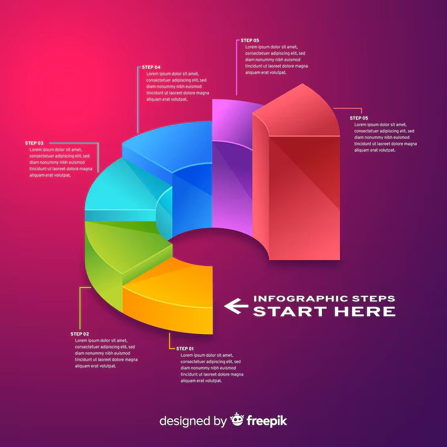
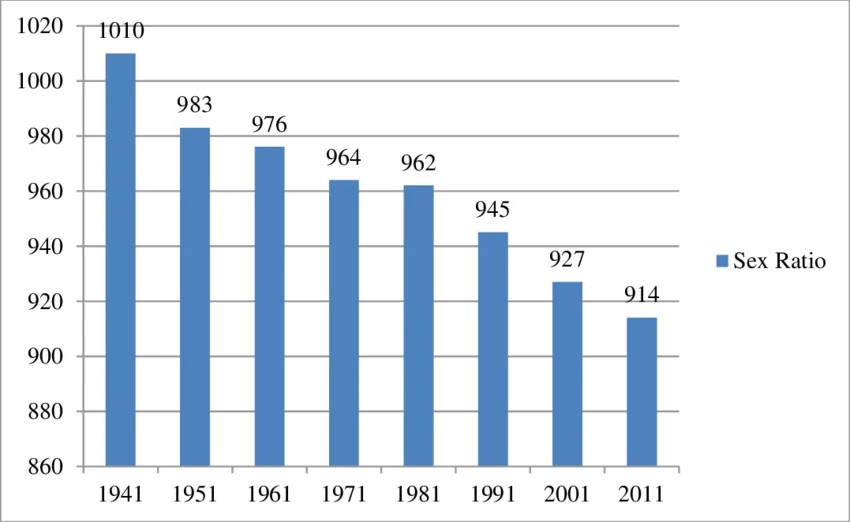

This page compares three input images (posters) with three generated MP4 video results. Poster 1 (1.jpg, square 1:1) produces Video 1 (1.mp4, square 1:1). Poster 2 (2.jpg, vertical 9:16) produces Video 2 (2.mp4, vertical 9:16). Poster 3 (3.jpg, square 1:1) produces Video 3 (3.mp4, square 1:1). The videos autoplay, are muted, and loop. Controls are available for manual playback.
Structured data includes a WebPage, two ItemLists (input images and video results), and an FAQPage with four questions covering content, formats, autoplay, and AI-search optimization. This supports GEO (generative engine optimization), AEO (answer engine optimization), LLMO (large language model optimization), and traditional SEO.